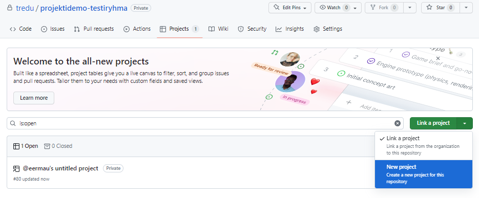
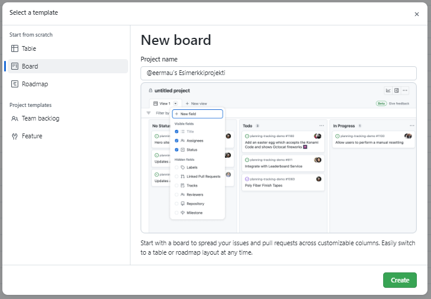

GitHub ja projektityöskentely
Demoprojektissa tehtävänantona on vuokraussovelluksen yhden sprintin suunnittelu ja toteuttaminen ryhmässä.
Projektiryhmät
Kun ensimmäinen ilmoittautuu ryhmässä hän nimeää ryhmän (mielellään ryhmä1, ryhmä2 jne), seuraavat liittyvät kyseiseen tiimiin.
Käsitteitä
Peruskäsitteitä ovat Scrum, Sprint ja Backlog. What is Scrum? | Scrum under 3 minutes
GitHub Projects
Käytämme projektinhallinnassa GitHubin omaa työkalua Projects.
Projektiseinä
Yksi ryhmästä luo uuden projektin välilehdellä Projects.

Valitse malliksi Board.

Projektiseinällä kuvataan tehtävät mitä ryhmän on tarkoitus saada sprintin aikana tehtyä.
Backlog
- Tänne lisätään ryhmän päättämät toiminnallisuudet joita tuotteelle on tarkoitus saada tehtyä
- Kaikkia toimintoja ei välttämättä saada tehtyä projektin sprinttien aikana
- User storyt järjestetään tärkeysjärjestykseen, huomioikaa että osa toiminnoista pitää toteuttaa tietyssä järjestyksessä
In Progress
- Meneillään olevat tehtävät siirretään tähän sarakkeeseen, merkitään kuka työtä on tekemässä
- Tässä vaiheessa määritä Assignees-kohdassa kenelle tehtävä on määritetty.
Done
- Valmiit tehtävät siirretään tähän sarakkeeseen
Daily
- Daily-sarakkeessa kuvataan lyhyt merkintä päiväpalaverista.
- päiväys, tunnit
- ketkä paikalla
- mitä kukakin tekemässä
{kind=link}
Lisätä Backlog-sarakkeelle alussa tehtäviä mitä projekti sisältäisi.
Suunnitelma
- tietokantakaavio
- 1 wireframe / projektin jäsen, siitä toiminnosta minkä olet tekemässä. Ulkoasusuunnitelman voi tehdä Adobe XD:llä tai Figmalla.
Toteutus
- Toteutetaan MVC-mallin mukaisesti, käytä pohjana news 2021-repoa.
- Tietokanta jonkun opiskelijan cPanel-tunnusten alle
- Code-välilehdelle tulee kansiot docs (tänne tietokantakaavio ja wireframe) ja mvc. Lisätkää myös readme.md jossa kerrotaan projektin yleiset asiat (projektin aihe, koska tehty, ketkä ovat ryhmän jäsenet, käytetyt tekniikat).